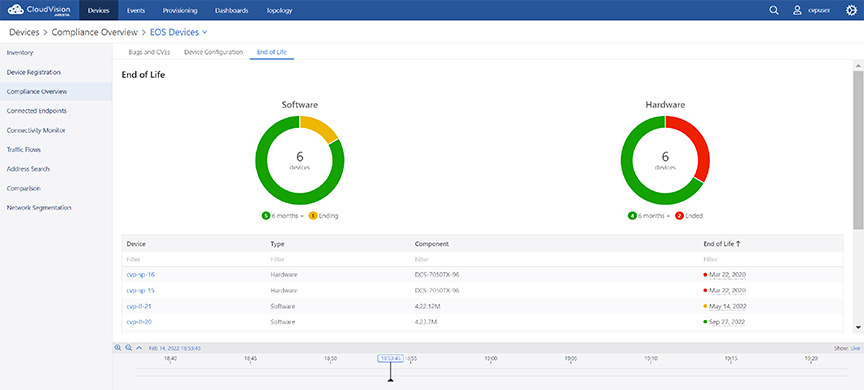

Arista Networks Internship Projects
- CloudVision Dashboard Automation: Wrote Python scripts to manage and display device tags and visualize real-time connections within Arista’s CloudVision Studio.
- Spine-and-Leaf Network Generation: Developed a Mako + Python script to construct spine-and-leaf topologies, simplifying deployment in CloudBuilder and CloudVision Studio.
- PyAVD Configuration: Customized Arista’s PyAVD Python package to be compatible with CloudVision Studio for configuration automation.
- Git-Based Configuration Management: Used Git to manage configurations and create pull requests across Arista’s internal infrastructure.
- Certification Guide Creation: Created a comprehensive study plan to help interns prepare for Arista ACE: L1 Certification.
